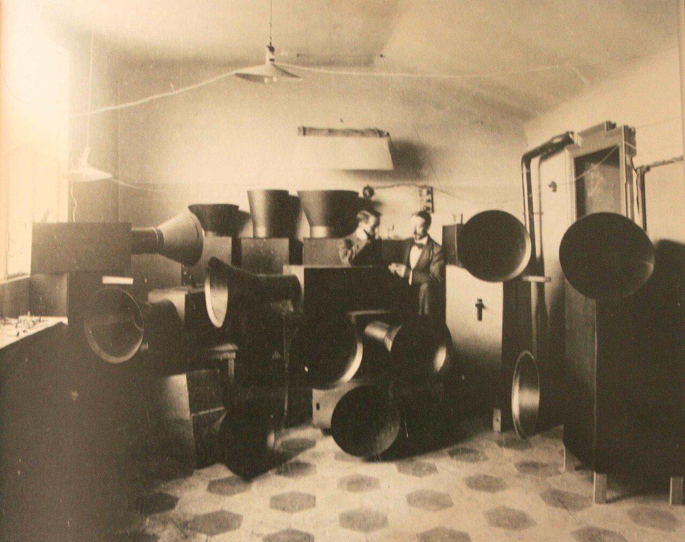

References / Product / 475
Intonarumori (noise intoners)
Luigi Russolo and Ugo Piatti stand among their intonarumori, wooden boxes with large metal horns built to play the music of Russolo’s manifesto The Art of Noises.
- Source
- Wikimedia Commons: Luigi Russolo and assistant Ugo Piatti in their Milan studio with Intonarumori, 1913
- Creator
- Luigi Russolo, with Ugo Piatti
- Made
- 1913 (photograph and first instruments)
- Style
- Italian Futurism (agent-proposed, not yet reviewed by a person)
- Moods
- Mechanical, loud, theatrical
- Evidence
- Downloaded and inspected the Commons file (original 2301 × 1821 px; a 1280 × 1013 px rendering was inspected and stored). The file is a photograph of a printed reproduction of the period photograph, by an unknown photographer. Commons says it was first published with Russolo’s The Art of Noises. The instruments themselves are lost: Wikipedia says most were destroyed in Paris during the Second World War.
- Reviewed
- Rights
- Open license, stored. License: public domain. Rights policy
,_1913.jpg){kind=link}
Context
Russolo invented and built the intonarumori from about 1910 to 1930, in 27 varieties. A wheel touched a string attached to a drum; a handle changed the string’s tension and pitch; a horn amplified the sound. Wikipedia: Intonarumori.
They were built to perform the music described in Russolo’s 1913 manifesto The Art of Noises, published as a book in 1916. Wikipedia.
The Commons description names the men as Russolo and his assistant Ugo Piatti in their Milan studio. Wikimedia Commons,_1913.jpg).
Observed
- About fifteen instruments are stacked across the room. Each is a plain dark rectangular box with a large flaring metal horn, aimed in different directions.
- The horns are smooth cones with a bright rim; there is no ornament on the boxes, only small handles and fittings.
- Two men in suits stand behind the instruments at the center.
- A tall cabinet with pipes stands at right; the floor has a hexagonal tile pattern and a lamp hangs from the ceiling.
- The print is sepia with a strong glare at upper left.
Why it belongs
The instruments look like machinery, not like orchestral instruments. The pile of horns pointing in many directions is itself an image of simultaneous noise.
The photograph has become an emblem of the movement’s aim to bring industrial sound into art.
Borrow
Repeat one simple industrial form, such as a horn or cone, in many sizes and directions to suggest noise.
Show sound as direction: aim shapes outward from a cluster.
Measured
Machine-extracted by tools/image-traits.py on . Full measurement.
- Mean chroma
- 0.18
- Palette
- #463e2d 17%
- #b99e7b 13%
- #d1b590 13%
- #e9d0ad 11%
- #332f21 11%
- #655643 11%
- #dac19a 6%
- #fce3c2 3%

